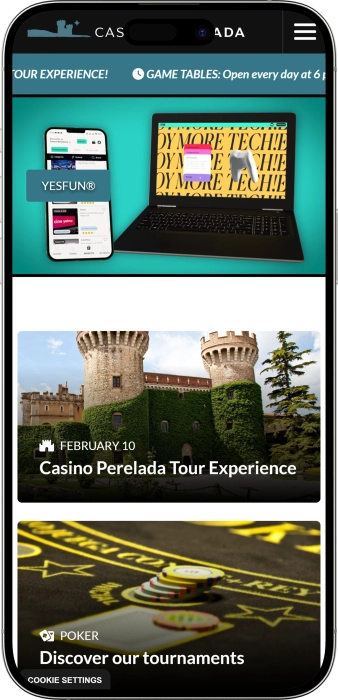

Oferta exclusiva de bienvenida de
Oferta exclusiva de bienvenida de
Vive la Experiencia del Casino Peralada en Cataluña
Los mejores casinos
Detalles de bonificación
Casino
Bonos
Rate
Giros gratis
Más info
Conseguir
Ventajas
- ¿Buscas un casino de confianza en Cataluña? Casino Peralada ofrece entretenimiento de primera clase con mesas de juego en vivo, torneos de póker exclusivos y las slots más modernas. Descubre lo que nos hace únicos:
-
Más de 300 máquinas tragaperras de última generación con jackpots progresivos
-
Mesas de póker en vivo con torneos profesionales y Cash Games todos los días
-
Programa de fidelización YESFUN con recompensas exclusivas y beneficios VIP
-
Restaurante gourmet Castell Perelada y Hotel con servicios de Relax & Wellness
-
Horario amplio: mesas de juego abiertas todos los días a partir de las 18:00
-
Ubicación privilegiada en Cataluña con ambiente único y servicio excepcional
- Únete a miles de jugadores que disfrutan de la mejor experiencia de casino en Cataluña. Nuestro equipo está listo para ofrecerte entretenimiento de calidad en un entorno exclusivo.
Casino Castell de Peralada App


Sobre Casino Peralada
Casino Peralada es un referente del entretenimiento en Cataluña desde hace décadas. Nuestro compromiso con la excelencia nos ha convertido en uno de los destinos de casino más prestigiosos. Ofrecemos juegos premium en un entorno único del Empordà.
- Ampliación de la sala de juego con más de 300 máquinas tragaperras premium
- Introducción de mesas de póker en vivo y torneos profesionales regulares
- Lanzamiento del programa de fidelización YESFUN para jugadores exclusivos
- Integración de servicios: restaurante gourmet, hotel y spa de lujo
Operamos bajo estrictas regulaciones del juego con certificaciones de juego responsable. Nuestra plataforma garantiza seguridad absoluta para todos los jugadores. Todos los juegos cumplen con estándares internacionales de aleatoriedad certificada. Continuamos innovando con nuevas máquinas y experiencias de juego exclusivas. Nuestro compromiso con el juego responsable es nuestra máxima prioridad. Visítanos y descubre por qué somos la primera elección para jugadores exigentes.

Guía Completa de Juegos de Casino
Descubre la Variedad de Juegos en Casino Peralada
Casino Peralada se destaca como uno de los destinos de entretenimiento más completos de Cataluña, ofreciendo una experiencia de juego incomparable que combina tradición y modernidad. Nuestra amplia selección de juegos incluye desde las clásicas mesas de póker hasta las slots más innovadoras del mercado, garantizando entretenimiento para todos los perfiles de jugadores. La calidad de nuestros servicios y la variedad de opciones nos posicionan como referente indiscutible en la industria del casino en España.
La experiencia de juego en Casino Peralada va más allá de las simples apuestas. Cada elemento ha sido cuidadosamente diseñado para proporcionar confort, emoción y seguridad. Nuestros croupiers profesionales, el ambiente exclusivo y la tecnología de última generación crean el escenario perfecto para disfrutar de sesiones memorables. Ya seas un jugador experimentado o estés comenzando tu aventura en el mundo del casino, encontrarás opciones adaptadas a tu nivel y preferencias.
Máquinas Tragaperras: Tecnología y Entretenimiento
Nuestra sala de máquinas tragaperras cuenta con más de 300 equipos de última generación que representan lo mejor de la industria del gaming. Cada máquina ha sido seleccionada estratégicamente para ofrecer variedad temática, diferentes rangos de apuesta y múltiples líneas de pago. Desde las clásicas tragaperras de tres rodillos hasta las modernas video slots con funciones bonus interactivas, la diversidad es nuestra principal fortaleza.
Los jackpots progresivos son uno de los principales atractivos de nuestra colección de slots. Estos premios acumulativos crecen constantemente con cada apuesta realizada, alcanzando cifras que pueden cambiar vidas. Las máquinas están interconectadas en red, lo que permite que los botes aumenten rápidamente y ofrezcan oportunidades reales de ganancias millonarias. Además, implementamos las últimas innovaciones tecnológicas que incluyen pantallas táctiles de alta definición, efectos de sonido envolventes y gráficos en 3D que hacen de cada partida una experiencia cinematográfica.
- Slots clásicas: Perfectas para jugadores tradicionales que aprecian la simplicidad y las mecánicas probadas. Estas máquinas de tres rodillos ofrecen experiencias nostálgicas con símbolos icónicos como frutas, campanas y números siete, pero incorporan sistemas de pago modernos.
- Video slots temáticas: Sumergen a los jugadores en mundos fantásticos con narrativas elaboradas. Cada juego cuenta con personajes únicos, misiones especiales y rondas de bonificación que amplían significativamente las posibilidades de ganar mientras mantienen el entretenimiento en niveles máximos.
- Jackpot progresivos: Representan la máxima aspiración de cualquier jugador de slots. Con premios que acumulan millones de euros, estas máquinas están conectadas en red nacional e internacional, permitiendo que los botes crezcan exponencialmente con cada partida jugada en cualquier casino conectado.
- Slots de alta volatilidad: Diseñadas para jugadores que buscan emociones fuertes y no temen la varianza. Aunque los premios pueden tardar en llegar, cuando lo hacen, las ganancias son sustancialmente mayores que en máquinas de volatilidad baja o media.
- Megaways y mecánicas innovadoras: La última generación de tragaperras incorpora sistemas como Megaways con hasta 117,649 formas de ganar, cascadas de símbolos, multiplicadores crecientes y compra de funciones bonus que revolucionan la experiencia tradicional de las slots.
Mesas de Póker: Torneos y Partidas en Vivo
El póker es sin duda una de las piedras angulares de Casino Peralada. Nuestras mesas de póker funcionan todos los días a partir de las 18:00 horas, ofreciendo tanto partidas de cash game como torneos estructurados. Los jugadores pueden elegir entre diferentes modalidades como Texas Hold'em, Omaha y variantes menos comunes que añaden diversidad estratégica. Cada mesa está equipada con tecnología profesional y atendida por croupiers experimentados que garantizan el correcto desarrollo de cada mano.
Los torneos de póker en Casino Peralada han ganado prestigio regional e internacional. Organizamos eventos regulares con diferentes estructuras de buy-in que permiten la participación desde jugadores recreativos hasta profesionales. Las series de torneos incluyen eventos satélite que dan acceso a competiciones mayores, freerolls exclusivos para miembros YESFUN, y torneos garantizados con premios acumulados que superan regularmente las expectativas iniciales.
- Cash Games diarios: Disponibles en múltiples límites para adaptarse a todos los bankrolls. Desde micro stakes perfectos para principiantes hasta high stakes que atraen a jugadores profesionales, siempre hay acción garantizada con mesas activas en diferentes horarios.
- Torneos estructurados: Competiciones con formatos variados que incluyen turbo, deep stack, rebuy, freezeout y knockout progresivo. Cada torneo está diseñado para ofrecer una experiencia única con estructuras de ciegas balanceadas y premios atractivos distribuidos entre las posiciones pagadas.
- Eventos especiales: Organizamos series mensuales que culminan en Main Events de alto prestigio. Estas series incluyen eventos paralelos, torneos de parejas y competiciones por equipos que fomentan la comunidad y añaden dimensiones sociales al juego competitivo.
- Sala VIP de póker: Espacio exclusivo para jugadores de alto nivel con servicios premium. Incluye mesas privadas, atención personalizada, bebidas de cortesía y ambiente controlado que permite concentración máxima durante sesiones intensivas de juego profesional.
- Formación y coaching: Ofrecemos sesiones educativas para jugadores que desean mejorar su juego. Profesionales experimentados comparten estrategias, análisis de manos y conceptos avanzados que pueden transformar jugadores recreativos en competidores serios.
Ruleta y Juegos de Mesa Clásicos
La ruleta europea es uno de los juegos más emblemáticos de cualquier casino, y en Casino Peralada mantenemos la tradición con equipos de alta calidad y croupiers profesionales. Nuestras mesas de ruleta funcionan con sistemas certificados que garantizan aleatoriedad absoluta en cada giro. Los jugadores pueden disfrutar de la emoción de apostar a números, colores, pares o impares con límites de mesa que se adaptan tanto a jugadores conservadores como a high rollers que buscan acción con apuestas significativas.
Además de la ruleta, ofrecemos una selección completa de juegos de mesa clásicos que incluyen Blackjack, Punto y Banca, y Poker Caribeño. Cada juego mantiene las reglas tradicionales mientras incorpora variantes modernas que añaden opciones estratégicas adicionales. El Blackjack, por ejemplo, está disponible en modalidades clásicas y en versiones con apuestas laterales que multiplican las oportunidades de ganancia en cada mano.
| Juego de Mesa | Características Principales | Ventaja del Jugador | Nivel Dificultad |
|---|---|---|---|
| Ruleta Europea | Un solo cero, múltiples opciones de apuesta, pagos hasta 35:1 | RTP 97.3% en apuestas simples | Principiante |
| Blackjack Clásico | Juego contra dealer, estrategia básica aplicable, 3:2 en Blackjack natural | Hasta 99.5% con estrategia óptima | Intermedio |
| Punto y Banca | Juego de cartas simple, tres opciones de apuesta, sin decisiones complejas | 98.9% apostando a Banca | Principiante |
| Póker Caribeño | Contra la casa, jackpot progresivo opcional, pagos hasta 100:1 | RTP variable según estrategia | Intermedio |
| Texas Hold'em Bonus | Variante de póker contra dealer, múltiples rondas de apuesta | 97.8% con juego correcto | Avanzado |
Programa YESFUN: Beneficios Exclusivos
El programa de fidelización YESFUN representa nuestro compromiso con los jugadores habituales de Casino Peralada. Este sistema de recompensas está diseñado para reconocer y premiar la lealtad de nuestros clientes mediante un sistema de puntos acumulables que se convierten en beneficios tangibles. Cada euro jugado en slots, cada mano de póker y cada apuesta en mesas de juego contribuye a tu saldo de puntos YESFUN, que posteriormente pueden canjearse por créditos de juego, acceso a eventos exclusivos o servicios del hotel y restaurante.
Los miembros YESFUN disfrutan de niveles progresivos que desbloquean ventajas incrementales. Desde el nivel Bronze hasta el prestigioso Diamond, cada categoría ofrece beneficios superiores que incluyen multiplicadores de puntos más altos, invitaciones a torneos privados, bonificaciones de cumpleaños personalizadas y acceso prioritario a las nuevas máquinas y juegos. El nivel más alto proporciona servicios de concierge personalizado que puede gestionar reservas, organizar experiencias a medida y ofrecer atención VIP durante toda tu visita.
- Acumulación de puntos acelerada: Sistema transparente donde cada tipo de juego genera puntos a tasas específicas. Las slots suelen ofrecer acumulación más rápida, mientras que los juegos de mesa con menor ventaja de la casa generan puntos a ritmos ajustados que mantienen el equilibrio del programa.
- Eventos exclusivos para miembros: Torneos cerrados con premios garantizados, cenas temáticas en el Restaurante Castell Perelada y experiencias únicas como catas de vino en las bodegas asociadas. Estos eventos crean comunidad y ofrecen valor añadido más allá del juego tradicional.
- Bonificaciones y créditos gratuitos: Los puntos YESFUN se convierten en saldo jugable que puede utilizarse en cualquier juego del casino. El sistema de conversión es transparente y los créditos otorgados no tienen requisitos de apuesta adicionales, permitiendo retiros de ganancias generadas con estos fondos.
- Acceso a salas VIP: Niveles superiores desbloquean áreas exclusivas del casino con ambiente más tranquilo, servicio de bebidas premium sin coste, asientos reservados en eventos especiales y atención personalizada que eleva significativamente la experiencia global.
- Beneficios hoteleros y gastronómicos: Los puntos YESFUN también pueden aplicarse a descuentos en habitaciones del Hotel Peralada, tratamientos en el spa, comidas en el restaurante gourmet y experiencias de enoturismo, integrando el casino en una oferta de ocio completa.
Experiencia Completa: Más Allá del Casino
Casino Peralada trasciende el concepto tradicional de sala de juego para convertirse en un destino de ocio integral. La ubicación en el corazón del Empordà catalán permite combinar la emoción del casino con experiencias culturales y gastronómicas únicas. El Restaurante Castell Perelada ofrece cocina gourmet elaborada por chefs reconocidos que fusionan tradición mediterránea con técnicas vanguardistas, creando menús que complementan perfectamente una noche de entretenimiento en el casino.
El Hotel Peralada proporciona alojamiento de lujo con habitaciones diseñadas para el confort absoluto. Los huéspedes pueden disfrutar de servicios de spa y wellness que incluyen tratamientos de relajación, piscinas y áreas de descanso. Esta integración de servicios permite planificar escapadas de fin de semana completas donde el casino es el centro de entretenimiento nocturno, pero las opciones diurnas incluyen turismo enológico, visitas culturales a la región y relax en instalaciones de primera categoría.
La región del Empordà ofrece atractivos adicionales que enriquecen la experiencia. Desde las bodegas de Castell Perelada, reconocidas internacionalmente por sus cavas y vinos, hasta los pueblos medievales cercanos y las playas de la Costa Brava a corta distancia, los visitantes encuentran múltiples razones para extender su estancia. Casino Peralada funciona como punto de partida perfecto para explorar una de las zonas más fascinantes de Cataluña mientras disfrutan de entretenimiento de calidad internacional.
Seguridad y Juego Responsable
La seguridad de nuestros jugadores es prioridad absoluta en Casino Peralada. Operamos bajo licencias y regulaciones estrictas que garantizan transparencia en todos los procesos. Nuestros sistemas de juego están certificados por organismos independientes que verifican la aleatoriedad de los resultados y la equidad de los pagos. Implementamos protocolos de seguridad física y digital que protegen tanto los fondos como la información personal de cada cliente.
El compromiso con el juego responsable se refleja en políticas activas de prevención y asistencia. Ofrecemos herramientas de autoexclusión, límites de apuesta personalizables y material educativo sobre los riesgos del juego problemático. Nuestro personal está capacitado para identificar comportamientos preocupantes y ofrecer orientación hacia recursos profesionales especializados. Colaboramos con organizaciones dedicadas a la prevención de la ludopatía para mantener estándares éticos máximos en todas nuestras operaciones, asegurando que el entretenimiento nunca se convierta en un problema para nuestros clientes.
Proveedores de software
Métodos de Pago y Gestión de Cuenta
Sistema de Pagos y Gestión Financiera en Casino Peralada
La gestión financiera eficiente es fundamental para disfrutar plenamente de la experiencia de casino. En Casino Peralada hemos implementado sistemas modernos que facilitan depósitos rápidos y retiros seguros mediante múltiples métodos de pago. Entendemos que cada jugador tiene preferencias distintas respecto a cómo manejar sus fondos, por ello ofrecemos opciones que abarcan desde efectivo tradicional hasta las últimas soluciones de pago digital, garantizando flexibilidad máxima adaptada a necesidades individuales.
La seguridad financiera está respaldada por tecnología de encriptación bancaria que protege cada transacción. Nuestros sistemas cumplen con normativas internacionales de protección de datos y prevención de fraude, asegurando que tus fondos estén siempre protegidos. Cada método de pago ha sido evaluado rigurosamente antes de su implementación, garantizando que solo trabajamos con proveedores confiables que mantienen los más altos estándares de seguridad en la industria financiera.
Métodos de Depósito Disponibles
Los depósitos en Casino Peralada están diseñados para ser instantáneos y sin complicaciones. Aceptamos una variedad amplia de métodos que permiten comenzar a jugar inmediatamente después de completar la transacción. El efectivo sigue siendo una opción popular entre visitantes del casino físico, quienes pueden dirigirse directamente a la caja para obtener fichas y créditos de juego. Esta modalidad tradicional garantiza privacidad total y control directo sobre el dinero apostado.
Las tarjetas de crédito y débito representan el método más utilizado por su conveniencia universal. Aceptamos las principales marcas internacionales con procesamiento instantáneo que acredita fondos en tu cuenta de juego sin demoras. Los límites de depósito pueden ajustarse según el nivel de tu membresía YESFUN, ofreciendo mayor flexibilidad a jugadores frecuentes. Además, implementamos verificaciones de seguridad discretas que previenen fraudes sin afectar la experiencia del usuario legítimo.
- Efectivo en caja física: Método tradicional disponible en horario completo de operación del casino. Permite depósitos inmediatos sin intermediarios digitales, ideal para quienes prefieren transacciones tangibles con recibos físicos que documentan cada movimiento financiero realizado durante la sesión de juego.
- Tarjetas Visa y Mastercard: Procesamiento instantáneo con verificación 3D Secure que añade capa adicional de protección. Los depósitos aparecen inmediatamente en tu saldo disponible, permitiendo comenzar a jugar sin esperas. Límites ajustables según historial y nivel de cuenta.
- Transferencias bancarias: Opción segura para depósitos de montos elevados. Aunque pueden requerir tiempo de procesamiento bancario estándar de 1-3 días laborables, este método es preferido por high rollers que manejan cantidades significativas y requieren trazabilidad bancaria completa.
- Carteras digitales: Soluciones modernas como PayPal, Skrill y Neteller ofrecen depósitos instantáneos con comisiones reducidas. Estas plataformas añaden capa de privacidad al no compartir datos bancarios directamente con el casino, manteniendo separación entre finanzas personales y fondos de entretenimiento.
- Criptomonedas: Tecnología emergente que algunos jugadores prefieren por anonimato y velocidad de transacción. Bitcoin y otras criptomonedas principales pueden utilizarse con conversión automática a euros, procesamiento rápido y comisiones mínimas que benefician especialmente a usuarios internacionales.
Procedimientos de Retiro y Tiempos de Procesamiento
Los retiros de ganancias están sujetos a protocolos de seguridad que verifican la identidad del solicitante y previenen actividades fraudulentas. Aunque estos procesos pueden parecer exhaustivos, están diseñados para proteger tus fondos. La primera solicitud de retiro requiere verificación de identidad mediante documentación oficial, proceso único que agiliza todas las transacciones futuras. Una vez completada la verificación inicial, los retiros subsiguientes se procesan con rapidez significativamente mayor.
Los tiempos de procesamiento varían según el método seleccionado. Las carteras digitales suelen ofrecer las transferencias más rápidas, con fondos disponibles en cuestión de horas después de la aprobación. Las transferencias bancarias tradicionales requieren más tiempo debido a procesos interbancarios estándar, pero garantizan seguridad máxima para montos elevados. Los miembros de niveles superiores en el programa YESFUN disfrutan de procesamiento prioritario que reduce significativamente los tiempos de espera en todos los métodos.
| Método de Pago | Tiempo Depósito | Tiempo Retiro | Comisiones | Límites Diarios |
|---|---|---|---|---|
| Efectivo (Caja) | Instantáneo | Instantáneo | Sin comisión | Hasta €10,000 |
| Tarjetas Visa/Mastercard | Instantáneo | 3-5 días laborables | Sin comisión depósitos | €50 - €5,000 |
| Transferencia Bancaria | 1-3 días laborables | 3-7 días laborables | Según banco emisor | Sin límite superior |
| PayPal / Skrill | Instantáneo | 12-24 horas | 1.5% retiros | €20 - €3,000 |
| Neteller | Instantáneo | 12-24 horas | 1.5% retiros | €10 - €3,500 |
| Criptomonedas (BTC/ETH) | Confirmación blockchain | 2-6 horas | Comisión red blockchain | €100 - €50,000 |
Verificación de Cuenta y Documentación Requerida
El proceso de verificación de cuenta es requisito legal bajo regulaciones contra el lavado de dinero y financiamiento del terrorismo. Casino Peralada implementa estos procedimientos con máxima eficiencia para minimizar inconvenientes. La verificación inicial requiere documentos que confirmen identidad y residencia. Típicamente, un documento de identidad oficial con fotografía y un comprobante de domicilio reciente son suficientes para completar la verificación básica que habilita retiros estándar.
Para retiros de montos elevados o actividad que supera ciertos umbrales, pueden solicitarse documentos adicionales. Esto incluye comprobantes de ingresos, estados de cuenta bancarios o documentación que demuestre el origen de fondos. Aunque estos requerimientos pueden parecer intrusivos, son prácticas estándar en la industria diseñadas para proteger tanto al casino como a los jugadores de actividades ilícitas. Nuestro equipo de soporte está disponible para guiar a través del proceso y resolver cualquier duda sobre documentación necesaria.
- Documento de identidad oficial: Pasaporte vigente, DNI o permiso de conducir con fotografía clara y todos los datos visibles. Los documentos deben estar en vigencia sin vencimientos y mostrar claramente nombre completo, fecha de nacimiento y fotografía actual del titular.
- Comprobante de domicilio: Factura de servicios públicos, estado de cuenta bancario o documento gubernamental emitido en los últimos tres meses que muestre claramente nombre y dirección. El domicilio debe coincidir con la información proporcionada durante el registro de cuenta.
- Verificación de método de pago: Para tarjetas de crédito/débito, fotografía mostrando primeros seis y últimos cuatro dígitos con el resto oculto por seguridad. Para cuentas bancarias, extracto que muestre titular y número de cuenta, protegiendo información sensible de transacciones.
- Documentación de origen de fondos: Requerida para retiros significativos, incluye comprobantes de salario, declaraciones fiscales, estados financieros o documentación que demuestre ingresos legítimos. Protege tanto al jugador como al casino de implicaciones en actividades financieras irregulares.
- Proceso de envío seguro: Todos los documentos se transmiten mediante portales encriptados que garantizan privacidad absoluta. Los archivos son revisados por personal autorizado exclusivamente y almacenados según normativas estrictas de protección de datos con eliminación programada después del período legal requerido.
Límites de Apuesta y Gestión del Bankroll
La gestión responsable del bankroll es habilidad fundamental para disfrutar del casino de forma sostenible. En Casino Peralada ofrecemos herramientas que ayudan a mantener control sobre el presupuesto de juego. Los límites de depósito personalizables permiten establecer restricciones diarias, semanales o mensuales que previenen gastos impulsivos. Estas configuraciones son ajustables mediante solicitud que requiere período de enfriamiento, asegurando que las decisiones sobre límites se tomen con reflexión adecuada.
Cada juego en el casino tiene límites de apuesta que acomodan diferentes estilos de juego. Las máquinas tragaperras permiten apuestas desde céntimos hasta euros por línea, mientras que las mesas de juego ofrecen rangos desde apuestas mínimas accesibles hasta límites altos que satisfacen a jugadores serios. Conocer estos rangos y seleccionar juegos acordes con tu bankroll es estrategia esencial. Como regla general, el presupuesto total de sesión debería permitir mínimo 50-100 apuestas para absorber la varianza natural y disfrutar de entretenimiento prolongado.
- Establecer presupuesto fijo: Determinar cantidad específica destinada exclusivamente a entretenimiento de casino que no afecte obligaciones financieras. Este dinero debe considerarse gasto de ocio similar a cine, restaurantes o cualquier otra forma de entretenimiento, nunca como inversión o fuente de ingresos esperada.
- Dividir el bankroll por sesiones: Fragmentar el presupuesto total en sesiones individuales evita agotar fondos prematuramente. Si planeas múltiples visitas, asignar porción específica a cada sesión mantiene disciplina y prolonga el entretenimiento a lo largo del tiempo planificado.
- Ajustar apuestas al bankroll: Las apuestas individuales no deberían exceder 1-2% del bankroll total de sesión. Esta regla conservadora permite absorber rachas perdedoras naturales sin eliminar rápidamente la capacidad de jugar, maximizando tiempo de entretenimiento y oportunidades de recuperación.
- Establecer objetivos de ganancia y pérdida: Definir punto de salida tanto para ganancias como para pérdidas promueve disciplina. Alcanzar meta de ganancia preestablecida debería señalar momento de retirarse y asegurar beneficios, mientras que límite de pérdida protege de perseguir pérdidas en decisiones emocionales.
- Utilizar herramientas de autocontrol: Aprovechar funciones de límites de tiempo de sesión, pausas obligatorias y recordatorios de gastos que el sistema ofrece. Estas herramientas tecnológicas complementan autodisciplina y ayudan a mantener comportamiento de juego saludable a largo plazo.
Bonificaciones y Promociones: Términos y Condiciones
Las bonificaciones añaden valor significativo a la experiencia de casino, pero siempre vienen acompañadas de términos y condiciones que deben comprenderse completamente. El bono de bienvenida típicamente requiere depósito mínimo y está sujeto a requisitos de apuesta que especifican cuántas veces debe jugarse el monto del bono antes de poder retirar ganancias asociadas. Estos requisitos varían según el tipo de bonificación y los juegos en los que se utilice el crédito bonificado.
Es fundamental leer detenidamente los términos antes de aceptar cualquier bonificación. Algunos bonos tienen restricciones sobre juegos que contribuyen a requisitos de apuesta, con slots contribuyendo usualmente 100% mientras que juegos de mesa pueden contribuir porcentajes menores o estar excluidos completamente. Los límites de tiempo para cumplir requisitos también son importantes, ya que bonificaciones no utilizadas dentro del período especificado se forfectan automáticamente junto con ganancias generadas.
- Requisitos de apuesta (wagering): Especifican multiplicador que debe jugarse antes de retirar. Bonificación de €100 con requisito 40x significa que deben apostarse €4,000 en juegos elegibles. Cumplir este requisito desbloquea tanto el bono como ganancias generadas durante el proceso de juego.
- Contribución por tipo de juego: No todos los juegos contribuyen igualmente. Slots suelen contribuir 100%, ruleta puede variar entre 10-50%, mientras que algunos juegos como blackjack pueden estar completamente excluidos o contribuir porcentajes mínimos debido a su bajo margen de casa favorable al jugador.
- Límites de apuesta con fondos de bono: Muchas promociones restringen apuesta máxima por giro o mano mientras se juega con crédito bonificado. Típicamente entre €3-€5 por apuesta, esta limitación previene estrategias agresivas que podrían explotar la bonificación de formas no intencionadas por los términos.
- Período de validez: Las bonificaciones tienen ventana temporal para utilizarse y cumplir requisitos, usualmente entre 7-30 días desde activación. Pasado este período, tanto el bono como ganancias asociadas se eliminan automáticamente de la cuenta, sin excepciones ni extensiones salvo circunstancias extraordinarias.
- Retiro máximo de ganancias de bono: Algunas bonificaciones, especialmente spins gratuitos sin depósito, limitan cantidad máxima retirable de ganancias generadas. Conocer estos límites evita decepciones y permite planificar estrategia de juego apropiada según potencial real de beneficio.
Atención al Cliente y Soporte Financiero
Nuestro equipo de soporte está capacitado específicamente para asistir con consultas relacionadas a transacciones financieras. Ya sea que necesites ayuda completando un depósito, rastreando un retiro pendiente o resolviendo discrepancias en tu balance, el servicio al cliente está disponible mediante múltiples canales. El chat en vivo ofrece respuestas inmediatas para consultas urgentes, mientras que el correo electrónico es ideal para cuestiones que requieren documentación adjunta o explicaciones detalladas.
Para temas complejos relacionados con verificación de cuenta o retiros de montos significativos, recomendamos contactar al departamento financiero especializado. Este equipo maneja casos que requieren revisión detallada y puede proporcionar actualizaciones precisas sobre estado de procesamiento. Mantener comunicación proactiva y proporcionar documentación solicitada rápidamente acelera resolución de cualquier proceso financiero, asegurando experiencia fluida desde el depósito inicial hasta el retiro exitoso de ganancias.
Preguntas frecuentes
Para registrarte en Casino Peralada, visita nuestro casino físico en Cataluña con documento de identidad válido. El registro es gratuito e inmediato. El personal de recepción te guiará en el proceso de alta y activación de tu tarjeta YESFUN. Si prefieres jugar online, accede a nuestra plataforma digital y completa el formulario con datos personales básicos. La verificación de cuenta requiere envío de documentación que confirme identidad y domicilio.
Casino Peralada ofrece más de 300 máquinas tragaperras con jackpots progresivos, ruleta europea, blackjack clásico, punto y banca, y póker caribeño. Las mesas de póker en vivo funcionan diariamente a partir de las 18:00 con torneos regulares y cash games en múltiples límites. Disponemos de slots temáticas de última generación, video póker y juegos de mesa con croupiers profesionales que garantizan entretenimiento variado para todos los gustos.
Aceptamos efectivo en caja del casino, tarjetas Visa y Mastercard, transferencias bancarias, carteras digitales como PayPal, Skrill y Neteller, además de criptomonedas principales. Los depósitos con tarjeta y e-wallets son instantáneos, mientras que transferencias bancarias requieren 1-3 días laborables. Cada método tiene límites específicos ajustables según tu nivel en el programa YESFUN. Las comisiones varían dependiendo del proveedor seleccionado.
Los tiempos de retiro dependen del método seleccionado. Efectivo en caja es instantáneo, carteras digitales procesan en 12-24 horas, tarjetas de crédito requieren 3-5 días laborables, y transferencias bancarias toman 3-7 días. El primer retiro necesita verificación de identidad que puede añadir tiempo adicional. Miembros de niveles superiores YESFUN disfrutan de procesamiento prioritario. Una vez aprobado el retiro, los fondos se envían al método seleccionado sin demoras adicionales.
YESFUN es nuestro programa de fidelización que recompensa jugadores habituales. Acumulas puntos con cada euro apostado en slots, mesas de póker y juegos de mesa. Los puntos se canjean por créditos de juego, acceso a torneos exclusivos, descuentos en restaurante y hotel, o beneficios VIP. El programa tiene niveles progresivos desde Bronze hasta Diamond, cada uno con ventajas incrementales como multiplicadores de puntos superiores y atención personalizada.
Sí, Casino Peralada opera bajo regulaciones españolas con todas las licencias requeridas para ofrecer juegos de azar. Nuestros sistemas están certificados por organismos independientes que verifican aleatoriedad y equidad. Implementamos encriptación SSL para proteger datos personales y financieros. Cumplimos estrictamente con normativas contra lavado de dinero y promovemos juego responsable con herramientas de autoexclusión y límites personalizables para proteger a nuestros jugadores.
Nuestra plataforma digital está completamente optimizada para dispositivos móviles. Puedes acceder desde smartphones y tablets con sistema Android o iOS sin necesidad de descargar aplicaciones. El navegador móvil proporciona experiencia completa con todos los juegos disponibles, gestión de cuenta, depósitos y retiros. La interfaz se adapta automáticamente al tamaño de pantalla garantizando navegación fluida y controles táctiles responsivos para jugar cómodamente desde cualquier lugar.
Sí, los nuevos miembros reciben bonificación de bienvenida al realizar su primer depósito. El bono típicamente iguala porcentaje del depósito inicial con requisitos de apuesta específicos que deben cumplirse antes de retirar ganancias. Los términos y condiciones detallan juegos elegibles, período de validez y contribución de cada tipo de juego. Además, la inscripción en YESFUN otorga puntos iniciales. Consulta promociones vigentes en recepción o sección de ofertas online para detalles actualizados.
Casino Peralada es destino completo de ocio que incluye Restaurante Castell Perelada con cocina gourmet, Hotel Peralada con habitaciones de lujo y servicios de spa y wellness. Organizamos eventos especiales, cenas temáticas y experiencias de enoturismo en las bodegas cercanas. La ubicación en el Empordà catalán permite combinar entretenimiento de casino con turismo cultural, gastronomía de alta calidad y relax en instalaciones premium diseñadas para estancias memorables.
Nuestro servicio de atención al cliente está disponible mediante múltiples canales. El chat en vivo en la plataforma digital ofrece respuestas inmediatas durante horario operativo. Puedes enviar consultas por correo electrónico para temas que requieran documentación adjunta. En el casino físico, el personal de recepción y supervisores de sala están siempre disponibles para asistencia presencial. Para consultas telefónicas, encuentra el número en nuestra página de contacto. Respondemos todas las consultas con profesionalidad y rapidez.